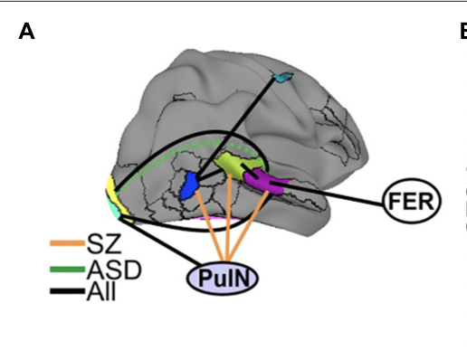
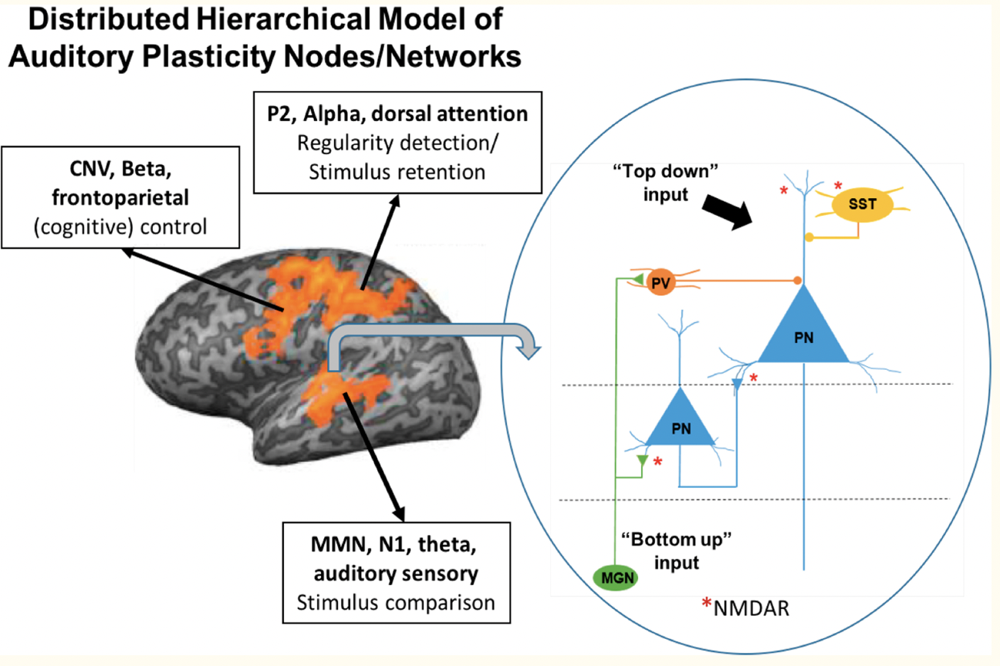
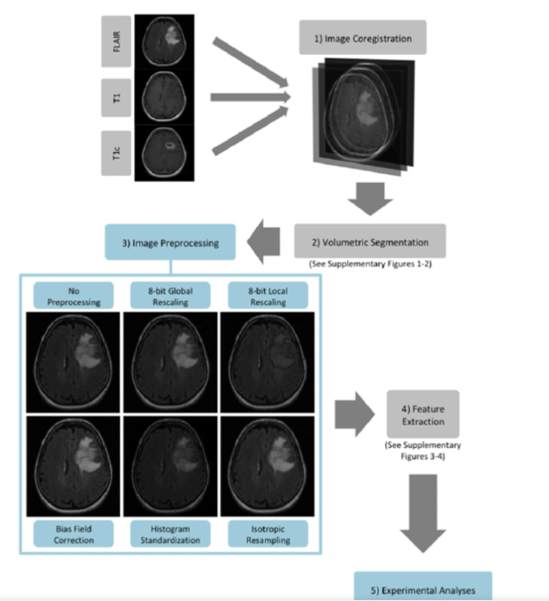
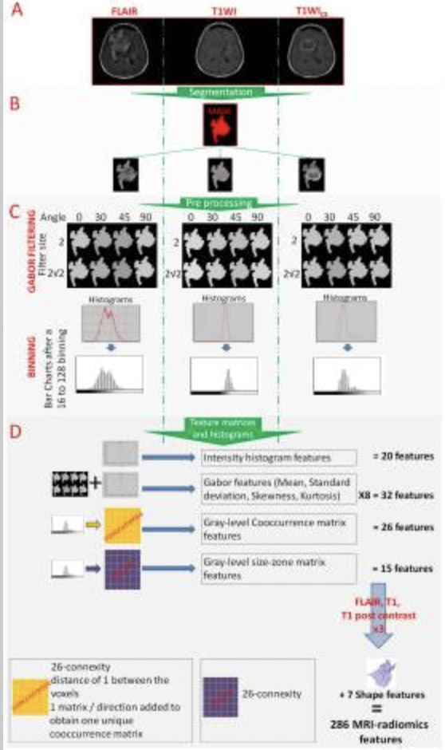
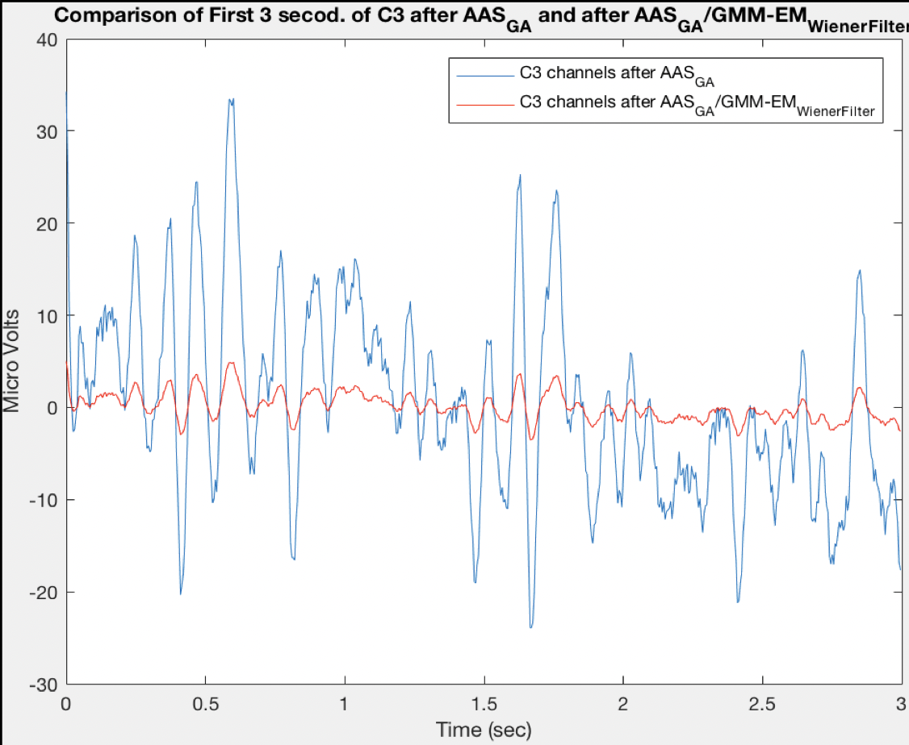

Publications







Code & Projects
-
CT Deep Learning Reconstruction (reduced X-ray dose) — custom normalizationPython
-
CNN — Breast Cancer Detection (RSNA Challenge)Python
-
ROAST: Realistic Volumetric-Approach Simulator for tES
-
DualBoot Windows/Linux — Psychtoolbox Audio SetupShell
Honors & Awards
Outreach
Intro to Biomedical Engineering
An introductory curriculum developed for NYU Upward Bound high school students covering fundamentals of biomedical engineering and the engineer's role in medicine.
Open CourseIntro to Bioinstrumentation (Circuits)
Hands-on introduction to bioinstrumentation and circuit fundamentals, designed for high school students in the NYU Upward Bound / 1199 program.
Open CourseNYU College Prep Academy / Upward Bound
Staff site for the College Prep Academy / 1199 Workforce Program — resources, activities, and materials for the program team.
Visit SiteMRI Tumor Rendering
3D visualization of a tumor extracted from MRI image data — a demonstration project bridging imaging physics and visual communication.
Watch VideoBermudez-Cabrera Hermandad Scholarship
A scholarship founded with my sister in collaboration with the NYU College Prep Academy / 1199 Workforce Program, supporting high school seniors pursuing STEM majors or technical careers. Three winners are selected annually, each receiving funding in two installments — upon selection and upon proof of enrollment.
Eligibility: High school seniors enrolled in the NYU Upward Bound / 1199 Program.
The scholarship was featured in:
Hobbies & Interests
When I'm not at the MRI scanner, I explore other ways of seeing the world — from the physics of light patterns on water to the geometry of a guitar chord. If a video doesn't play, use the pop-out button in the upper-right corner of the player.